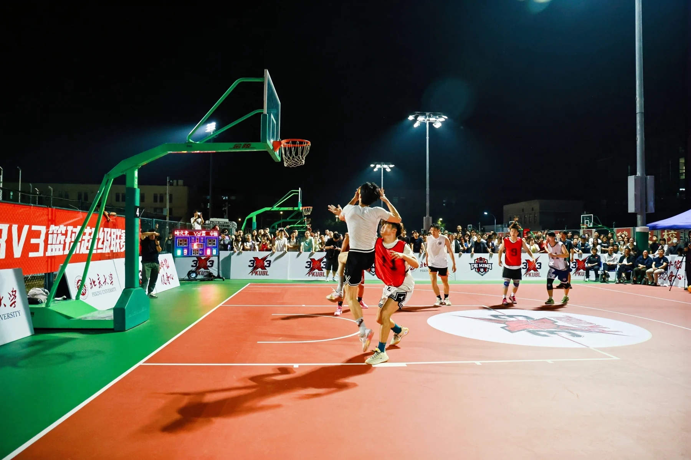
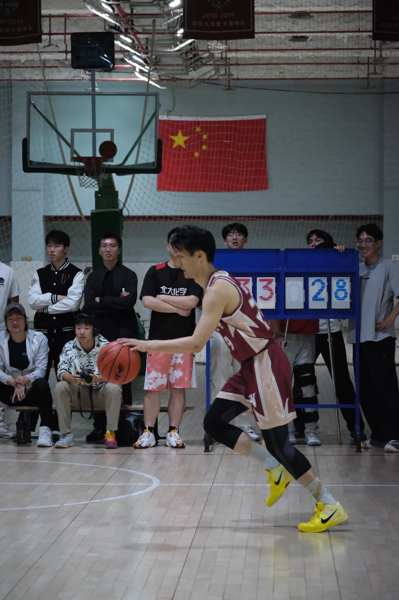
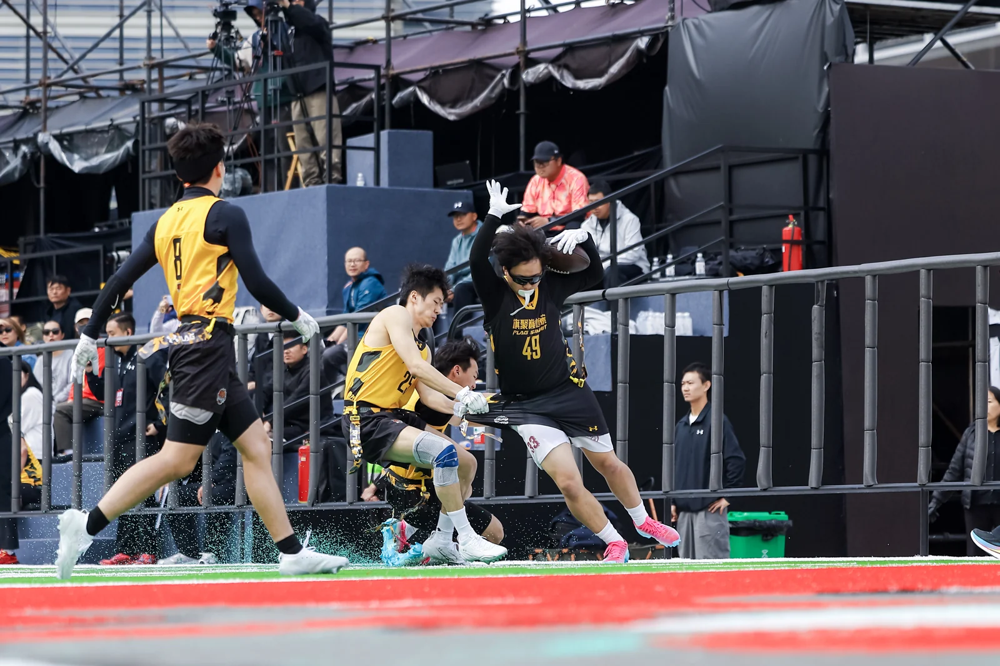
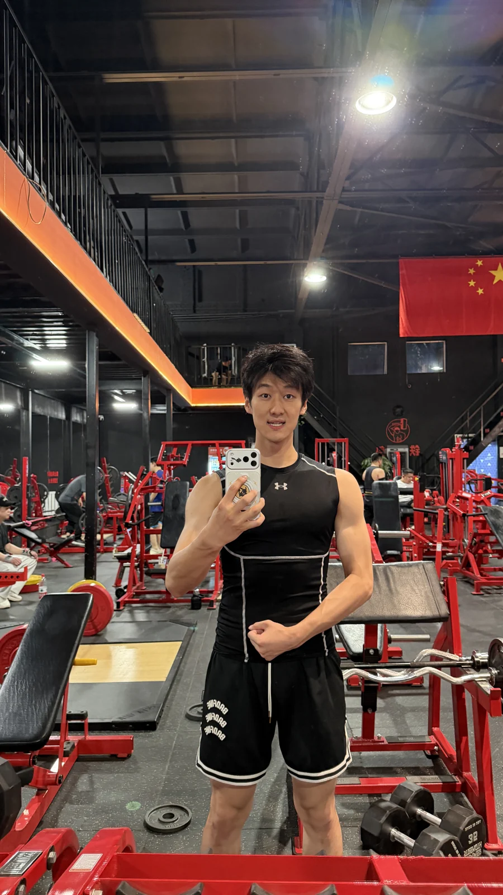

篮球 · 3v3
冠军 & MVP
北大 3v3 超级联赛
团队冠军 / 个人最有价值球员BASKETBALL, AND A LITTLE MORE.
认真打球，
也认真去玩。
北大普通生代表队队员 · 医学队长
篮球之外，还想试试更多有意思的事。
ENTP / 全球卫生专硕研一 / 运动名单持续更新中
01 / ON THE COURT
队长、队员，还有一起上场的人。
篮球，是大学生活里很长的一条线。

A FEW THINGS I'VE PLAYED FOR
篮球：北大普通生代表队队员、医学队长。
腰旗橄榄球：代表北大 Dragons 球队参赛。

北大 3v3 超级联赛
团队冠军 / 个人最有价值球员澳门大学世界名校邀请赛
本项成绩指该邀请赛名次。安德玛巅峰碗
2021 届北大新生杯冠军
2021—2024 届北大杯冠军
02 / OFF THE COURT
攀岩、健身、腰旗橄榄球。
滑雪也在玩，边玩边学。
篮球占了大学生活很大一部分。球场之外，我也喜欢攀岩、健身，喜欢试试别的运动。
至于滑雪，先把“在玩中”写进介绍，再慢慢往下更新。


海面、红墙、黄昏。几张照片，留一点生活。
我叫潘冠宇，目前在北京大学读全球卫生方向的专业硕士，研一。本科专业背景是预防医学。
参与过健康政策资料整理、社区现场数据搜集与清洗，也在医院和疾控中心实习过。专业背景是我的一部分，运动和生活同样也是。这一页，想把它们放在一起。
04 / SEE YOU ON DOUYIN
想继续认识我，就从这里找到我。